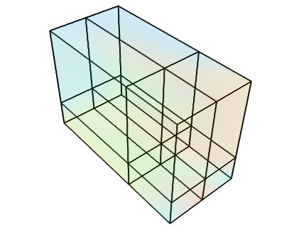
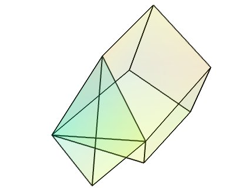

Data representation in Mayavi¶
Describing data in three dimensions in the general case is a complex problem. Mayavi helps you focus on your visualization work and not worry too much about the underlying data structures, for instance using mlab (see mlab: Python scripting for 3D plotting). We suggest you create sources for Mayavi using mlab or Mayavi sources when possible. However, it helps to understand the VTK data structures that Mayavi uses if you want to create data with a specific structure for a more efficient visualization, or if you want to extract the data from the Mayavi pipeline.
Outline
Mayavi data sources and VTK datasets
- When you load a file, or you expose data in Mayavi using one of the mlab.pipeline source functions (see Data sources), you create an object in the Mayavi pipeline that is attached to a scene. This object is a Mayavi source, and serves to describe the data and its properties to the Mayavi pipeline.
- The internal structures use to represent to data in 3D all across Mayavi are VTK datasets, as described below.
One should not confuse VTK (or TVTK) datasets and Mayavi data sources. There is a finite and small number of datasets. However, many pipeline objects could be constructed to fit in the pipeline below a scene and providing datasets to the pipeline.
Introduction to TVTK datasets¶
Mayavi uses the VTK library for all its visualization needs, via TVTK (Traited VTK). The data is exposed internally, by the sources, or at the output of the filters, as VTK datasets, described below. Understanding these structures is useful not only to manipulate them, but also to understand what happens when using filters to transform the data in the pipeline.
A dataset is defined by many different characteristics:

| Connectivity: | Connectivity is not only necessary to draw lines between the different points, it is also needed to define a volume. Implicit connectivity: connectivity or positioning is implicit. In this case the data is considered as arranged on a lattice-like structure, with equal number of layers in each direction, x increasing first along the array, then y and finally z. |
|---|---|
| Data: | Dataset are made of points positioned in 3D, with the corresponding data. Each dataset can carry several data components. Scalar or Vectors data: The data can be scalar, in which case VTK can perform operations such as taking the gradient and display the data with a colormap, or vector, in which case VTK can perform an integration to display streamlines, display the vectors, or extract the norm of the vectors, to create a scalar dataset. Cell data and point data: Each VTK dataset is defined by vertices and cells, explicitly or implicitly. The data, scalar or vector, can be positioned either on the vertices, in which case it is called point data, or associated with a cell, in which case it is called cell data. Point data is stored in the .point_data attribute of the dataset, and the cell data is stored in the .cell_data attribute. In addition the data arrays have an associated name, which is used in Mayavi to specify on which data component module or filter apply (eg: using the`SetActiveAttribute` filter). |
Note
VTK array ordering
All VTK arrays, whether it be for data or position, are exposed as (n, 3) numpy arrays for 3D components, and flat (n, ) array for 1D components. The index vary in the opposite order as numpy: z first, y and then x. Thus to go from a 3D numpy array to the corresponding flatten VTK array, the operation is:
vtk_array = numpy_array.T.ravel()
An complete list of the VTK datasets used by Mayavi is given below, after a tour of the Mayavi pipeline.
The flow of data¶
As described earlier, Mayavi builds visualization by assembling pipelines, where the data is loaded in Mayavi by a data source, and it can be transformed by filters and visualized by modules.
To retrieve the data displayed by Mayavi, to modify it via Python code, or to benefit from the data processing steps performed by the Mayavi filters, it can be useful to “open up” the Mayavi pipeline and understand how the data flows in it.
Inside the Mayavi pipeline, the 3D data flowing between sources filters and modules is stored in VTK datasets. Each source or filter has an outputs attribute, which is a list of VTK datasets describing the data output by the object.
- For example:
>>> import numpy as np >>> from mayavi import mlab >>> data = np.random.random((10, 10, 10)) >>> iso = mlab.contour3d(data)
The parent of iso is its ‘Colors and legend’ node, the parent of which is the source feeding into iso:
>>> iso.parent.parent.outputs [<tvtk_classes.image_data.ImageData object at 0xf08220c>]
Thus we can see that the Mayavi source created by mlab.surf exposes an ImageData VTK dataset.
Note
To retrieve the VTK datasets feeding in an arbitrary object, the mlab function pipeline.get_vtk_src() may be useful. In the above example:
>>> mlab.pipeline.get_vtk_src(iso)
[<tvtk_classes.image_data.ImageData object at 0xf08220c>]
Retrieving the data from Mayavi pipelines¶
Probing data at given positions¶
If you simply want to retrieve the data values described by a Mayavi object a given position in space, you can use the pipeline.probe_data() function (warning the probe_data function is new in Mayavi 3.4.0)
For example, if you have a set of irregularly spaced data points with no connectivity information:
>>> x, y, z = np.random.random((3, 100))
>>> data = x**2 + y**2 + z**2
You can expose them as a Mayavi source of unconnected points:
>>> src = mlab.pipeline.scalar_scatter(x, y, z, data)
and visualize these points for debugging:
>>> pts = mlab.pipeline.glyph(src, scale_mode='none',
... scale_factor=.1)
The resulting data is not defined in the volume, but only at the given position: as there is no connectivity information, Mayavi cannot interpolate between the points:
>>> mlab.pipeline.probe_data(pts, .5, .5, .5)
array([ 0. ])
To define volumetric data, you can use a delaunay3d filter:
>>> field = mlab.pipeline.delaunay3d(src)
Now you can probe the value of the volumetric data anywhere. It will be non zero in the convex hull of the points:
>>> # Probe in the center of the cloud of points
>>> mlab.pipeline.probe_data(field, .5, .5, .5)
array([ 0.78386768])
>>> # Probe on the initial points
>>> data_probed = mlab.pipeline.probe_data(field, x, y, z)
>>> np.allclose(data, data_probed)
True
>>> # Probe outside the cloud
>>> mlab.pipeline.probe_data(field, -.5, -.5, -.5)
array([ 0.])
Inspecting the internals of the data structures¶
You may be interested in the data carried by the TVTK datasets themselves, rather than the values they represent, for instance to replicate them. For this, you can retrieve the TVTK datasets, and inspect them.
Extracting data points and values¶
The positions of all the points of a TVTK dataset can be accessed via its points attribute. Retrieving the dataset from the field object of the previous example, we can view the data points:
>>> dataset = field.outputs[0] >>> dataset.points [(0.72227946564137335, 0.23729151639368518, 0.24443798107195291), ..., (0.13398528550831601, 0.80368395047618579, 0.31098842991116804)], length = 100This is a TVTK array. For us, it is more useful to convert it to a numpy array:
>>> points = dataset.points.to_array() >>> points.shape (100, 3)To retrieve the original x, y, z positions of the data points specified, we can transpose the array:
>>> x, y, z = points.TThe corresponding data values can be found in the point_data.scalars attribute of the dataset, as the data is located on the points, and not in the cells, and it is scalar data:
>>> dataset.point_data.scalars.to_array().shape >>> (100,)
Extracting lines¶
If we want to extract the edges of the Delaunay tessellation, we can apply the ExtractEdges filter to the field from the previous example and inspect its output:
>>> edges = mlab.pipeline.extract_edges(field) >>> edges.outputs [<tvtk_classes.poly_data.PolyData object at 0xf34e5fc>]We can see that the output is a PolyData dataset. Looking at how these are build (see PolyData), we see that the connectivity information is help in the lines attribute (that we convert to a numpy array using its .to_array() method):
>>> pd = edges.outputs[0] >>> pd.lines.to_array() array([ 2, 0, 1, ..., 2, 97, 18])The way this array is build is a sequence of a length descriptor, followed by the indices of the data points connected together in the points array retrieved earlier. Here we have only sets of pairs of points connected together: the array is an alternation of 2 followed by a pair of indices.
A full example illustrating how to use the VTK Delaunay filter to extract a graph is given in Delaunay graph example.
Headless use of Mayavi for the algorithms, without visualization¶
As you can see from the above example, it can be interesting to use Mayavi just for the numerical algorithm operating on 3D data, as the Delaunay tessellation and interpolation demoed.
To run such examples headless, simply create the source with the keyword argument figure=False. As a result the sources will not be attached to any engine, but you will still be able to use filters, and to probe the data:
>>> src = mlab.pipeline.scalar_scatter(x, y, z, data, figure=False)
Dissection of the different TVTK datasets¶
The 5 TVTK structures used are the following (ordered by the cost of visualizing them).:
| VTK name | Connectivity | Suitable for | Required information |
|---|---|---|---|
| ImageData | Implicit | Volumes and surfaces | 3D data array and spacing along each axis |
| RectilinearGrid | Implicit | Volumes and surfaces | 3D data array and 1D array of spacing for each axis |
| StructuredGrid | Implicit | Volumes and surfaces | 3D data array and 3D position arrays for each axis |
| PolyData | Explicit | Points, lines and surfaces | x, y, z, positions of vertices and arrays of surface Cells |
| UnstructuredGrid | Explicit | Volumes and surfaces | x, y, z positions of vertices and arrays of volume Cells |
ImageData¶
This dataset is made of data points positioned on an orthogonal grid, with constant spacing along each axis. The position of the data points are inferred from their position on the data array (implicit positioning), an origin and a spacing between 2 slices along each axis. In 2D, this can be understood as a raster image. This is the data structure created by the ArraySource mayavi source, from a 3D numpy array, as well as the mlab.pipeline.scalar_field and mlab.pipeline.vector_field factory functions, if the x, y and z arrays are not explicitely specified.

Creating a tvtk.ImageData object from numpy arrays:
from tvtk.api import tvtk
from numpy import random
data = random.random((3, 3, 3))
i = tvtk.ImageData(spacing=(1, 1, 1), origin=(0, 0, 0))
i.point_data.scalars = data.ravel()
i.point_data.scalars.name = 'scalars'
i.dimensions = data.shape
RectilinearGrid¶
This dataset is made of data points positioned on an orthogonal grid, with arbitrary spacing along the various axis. The position of the data points are inferred from their position on the data array, an origin and the list of spacings of each axis.
Creating a tvtk.RectilinearGrid object from numpy arrays:
from tvtk.api import tvtk
from numpy import random, array
data = random.random((3, 3, 3))
r = tvtk.RectilinearGrid()
r.point_data.scalars = data.ravel()
r.point_data.scalars.name = 'scalars'
r.dimensions = data.shape
r.x_coordinates = array((0, 0.7, 1.4))
r.y_coordinates = array((0, 1, 3))
r.z_coordinates = array((0, .5, 2))
StructuredGrid¶
This dataset is made of data points positioned on arbitrary grid: each point is connected to its nearest neighbors on the data array. The position of the data points are fully described by 1 coordinate arrays, specifying x, y and z for each point. This is the dataset created by the mlab.pipeline.scalar_field and mlab.pipeline.vector_field factory functions, if the x, y and z arrays are explicitely specified.

Creating a tvtk.StructuredGrid object from numpy arrays:
from numpy import pi, cos, sin, empty, linspace, random
from tvtk.api import tvtk
def generate_annulus(r, theta, z):
""" Generate points for structured grid for a cylindrical annular
volume. This method is useful for generating a unstructured
cylindrical mesh for VTK.
"""
# Find the x values and y values for each plane.
x_plane = (cos(theta)*r[:,None]).ravel()
y_plane = (sin(theta)*r[:,None]).ravel()
# Allocate an array for all the points. We'll have len(x_plane)
# points on each plane, and we have a plane for each z value, so
# we need len(x_plane)*len(z) points.
points = empty([len(x_plane)*len(z),3])
# Loop through the points for each plane and fill them with the
# correct x,y,z values.
start = 0
for z_plane in z:
end = start+len(x_plane)
# slice out a plane of the output points and fill it
# with the x,y, and z values for this plane. The x,y
# values are the same for every plane. The z value
# is set to the current z
plane_points = points[start:end]
plane_points[:,0] = x_plane
plane_points[:,1] = y_plane
plane_points[:,2] = z_plane
start = end
return points
dims = (3, 4, 3)
r = linspace(5, 15, dims[0])
theta = linspace(0, 0.5*pi, dims[1])
z = linspace(0, 10, dims[2])
pts = generate_annulus(r, theta, z)
sgrid = tvtk.StructuredGrid(dimensions=(dims[1], dims[0], dims[2]))
sgrid.points = pts
s = random.random((dims[0]*dims[1]*dims[2]))
sgrid.point_data.scalars = ravel(s.copy())
sgrid.point_data.scalars.name = 'scalars'
PolyData¶
This dataset is made of arbitrarily positioned data points that can be connected to form lines, or grouped in polygons to from surfaces (the polygons are broken up in triangles). Unlike the other datasets, this one cannot be used to describe volumetric data. The is the dataset created by the mlab.pipeline.scalar_scatter and mlab.pipeline.vector_scatter functions.

Creating a tvtk.PolyData object from numpy arrays:
from numpy import array, random
from tvtk.api import tvtk
# The numpy array data.
points = array([[0,-0.5,0], [1.5,0,0], [0,1,0], [0,0,0.5],
[-1,-1.5,0.1], [0,-1, 0.5], [-1, -0.5, 0],
[1,0.8,0]], 'f')
triangles = array([[0,1,3], [1,2,3], [1,0,5],
[2,3,4], [3,0,4], [0,5,4], [2, 4, 6],
[2, 1, 7]])
scalars = random.random(points.shape)
# The TVTK dataset.
mesh = tvtk.PolyData(points=points, polys=triangles)
mesh.point_data.scalars = scalars
mesh.point_data.scalars.name = 'scalars'
UnstructuredGrid¶
This dataset is the most general dataset of all. It is made of data points positioned arbitrarily. The connectivity between data points can be arbitrary (any number of neighbors). It is described by specifying connectivity, defining volumetric cells made of adjacent data points.
Creating a tvtk.UnstructuredGrid object from numpy arrays:
from numpy import array, random
from tvtk.api import tvtk
points = array([[0,1.2,0.6], [1,0,0], [0,1,0], [1,1,1], # tetra
[1,0,-0.5], [2,0,0], [2,1.5,0], [0,1,0],
[1,0,0], [1.5,-0.2,1], [1.6,1,1.5], [1,1,1], # Hex
], 'f')
# The cells
cells = array([4, 0, 1, 2, 3, # tetra
8, 4, 5, 6, 7, 8, 9, 10, 11 # hex
])
# The offsets for the cells, i.e. the indices where the cells
# start.
offset = array([0, 5])
tetra_type = tvtk.Tetra().cell_type # VTK_TETRA == 10
hex_type = tvtk.Hexahedron().cell_type # VTK_HEXAHEDRON == 12
cell_types = array([tetra_type, hex_type])
# Create the array of cells unambiguously.
cell_array = tvtk.CellArray()
cell_array.set_cells(2, cells)
# Now create the UG.
ug = tvtk.UnstructuredGrid(points=points)
# Now just set the cell types and reuse the ug locations and cells.
ug.set_cells(cell_types, offset, cell_array)
scalars = random.random(points.shape[0])
ug.point_data.scalars = scalars
ug.point_data.scalars.name = 'scalars'
Modifying the data
If you want to modify the data of any of these low-level data structures, you need to reasign data to the corresponding arrays, but also reasign them a name. Once this is done, you should call the ‘modified()’ method of the object, to tell the pipeline that the data has been modified:
ug.point_data.scalars = new_scalars
ug.point_data.scalars.name = 'scalars'
ug.modified()
External references¶
This section of the user guide will be improved later. For now, the following two presentations best describe how one can create data objects or data files for Mayavi and TVTK.
Presentation on TVTK and Mayavi2 for course at IIT Bombay
https://svn.enthought.com/enthought/attachment/wiki/MayaVi/tvtk_mayavi2.pdf
This presentation provides information on graphics in general, 3D data representation, creating VTK data files, creating datasets from numpy in Python, and also about mayavi.
Presentation on making TVTK datasets using numpy arrays made for SciPy07.
https://svn.enthought.com/enthought/attachment/wiki/MayaVi/tvtk_datasets.pdf
This presentation focuses on creating TVTK datasets using numpy arrays.
Datasets creation examples¶
There are several examples in the mayavi sources that highlight the creation of the most important datasets from numpy arrays. Specifically they are:
- Datasets example: Generate a simple example for each type of VTK dataset.
- Polydata example: Demonstrates how to create Polydata datasets from numpy arrays and visualize them in mayavi.
- Structured points2d example: Demonstrates how to create a 2D structured points (an ImageData) dataset from numpy arrays and visualize them in mayavi. This is basically a square of equispaced points.
- Structured points3d example: Demonstrates how to create a 3D structured points (an ImageData) dataset from numpy arrays and visualize them in Mayavi. This is a cube of points that are regularly spaced.
- Structured grid example: Demonstrates the creation and visualization of a 3D structured grid.
- Unstructured grid example: Demonstrates the creation and visualization of an unstructured grid.
These scripts may be run like so:
$ mayavi2 -x structured_grid.py
or better yet, all in one go like so:
$ mayavi2 -x polydata.py -x structured_points2d.py \
> -x structured_points3d.py -x structured_grid.py -x unstructured_grid.py
Inserting TVTK datasets in the Mayavi pipeline¶
TVTK datasets can be created using directly TVTK, as illustrated in the examples above. A VTK data source can be inserted in the Mayavi pipeline using the VTKDataSource. For instance we can create an ImageData dataset:
from tvtk.api import tvtk
import numpy as np
a = np.random.random((10, 10, 10))
i = tvtk.ImageData(spacing=(1, 1, 1), origin=(0, 0, 0))
i.point_data.scalars = a.ravel()
i.point_data.scalars.name = 'scalars'
i.dimensions = a.shape
If you are scripting using mlab, the simplest way to visualize your data is to use the mlab.pipeline to apply filters and modules to your data. Indeed these functions creating filters and modules accept VTK datasets and automatically insert them on the pipeline. A surface module could have been used to visualize the ImageData dataset created above as such:
from enthgouth.mayavi import mlab mlab.pipeline.surface(i)
In addition, inserting this dataset on the Mayavi pipeline with direct control on the Engine is done as suchwith VTKDataSource:
from mayavi.sources.api import VTKDataSource src = VTKDataSource(data=i) from mayavi.api import Engine e = Engine() e.start() s = e.new_scene() e.add_source(src)
Of course, unless you want specific control on the attributes of the VTK dataset, or you are using Mayavi in the context of existing code manipulating TVTK objects, creating an ImageData TVTK object is not advised. The ArraySource object of Mayavi will actually create an ImageData, but make sure you don’t get the shape wrong, which can lead to a segmentation fault. An even easier way to create a data source for an ImageData is to use the mlab.pipeline.scalar_field function, as explained in the section on creating data sources with mlab.

Table Of Contents
- Data representation in Mayavi
Previous topic
Organisation of Mayavi visualizations: the pipeline
Next topic
Objects populating the Mayavi pipeline
This Page
Google Search
Citing Mayavi
If you publish articles using Mayavi, please cite Mayavi. We need these citations to justify time and resources on the software.